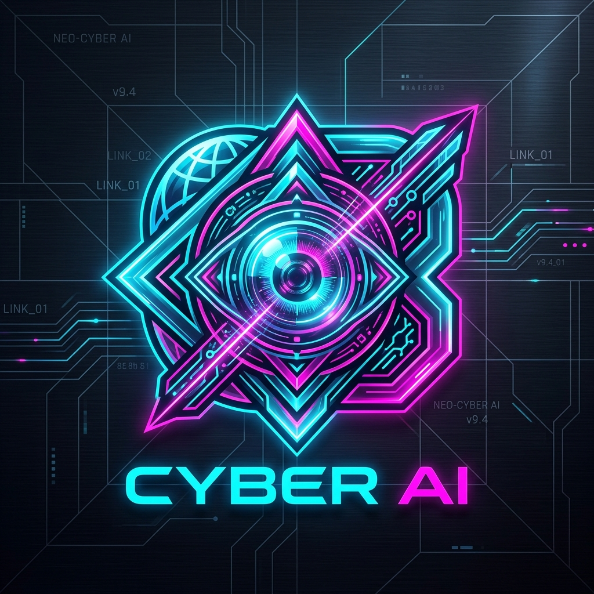

CORE STATUS: SYNCHRONIZED
ACTIVE NODES: 20
LATENCY: 12ms
SCANLINES: ON
AUDIO: ON
SEC_PROTOCOL: V7.4_NOMINAL

NEXUS
//
AI BROWSER
TACTICAL NEURAL TOOL NAVIGATOR
◈ AI ORACLE
CTRL+K
SYSTEM ACTIVE // GLOBAL INTELLIGENCE MAPPING
NAVIGATE
THE AI FRONTIER
▶
✕
PRESS [/]
PRICING TIER:
ALL TIERS
FREE & OPEN
FREEMIUM
COMMERCIAL / PAID
SORT SEQUENCE:
HIGHEST RATING ★
ALPHABETICAL (A-Z)
BY CATEGORY
★
PINNED ONLY
INITIALIZING MATRIX...
❖ 3D HOLOGRAPHIC
⊞ TACTICAL GRID
TOUCH / HOVER TO TILT
AI COMPANION
CTRL+K
[!] SYSTEM MESSAGE